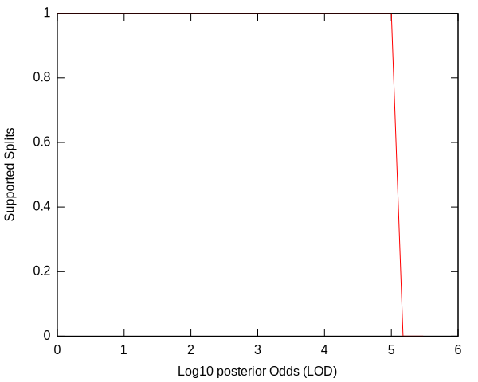
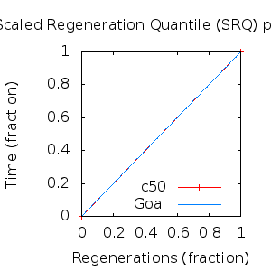
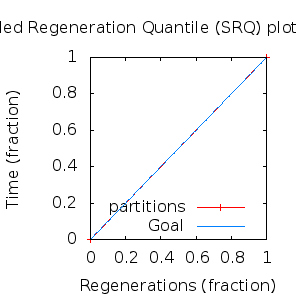

MCMC Post-hoc Analysis: 4 sequences
Data & Model
| Partition | Sequences | Lengths | Alphabet | Substitution Model | Indel Model | Scale Model |
|---|
| 1 |
E5_gammadelta_aa_reduced.fas |
135 - 165 |
Amino-Acids | S1 = lg08+f |
I1 = rs07 |
scale1 ~ gamma[0.5,2] |
Scalar variables
| Statistic | Median | 95% BCI | ACT | ESS | burnin | PSRF-CI80% | PSRF-RCF |
|---|
| prior |
-85.29 |
(-107.3, -66.25) |
24.45 |
11041 |
319
|
1.001 | 1.002
|
| prior_A1 |
-62 |
(-79.24, -46.99) |
4.843 |
55747 |
137
|
1 | 0.9994
|
| likelihood |
-1024 |
(-1038, -1009) |
4.907 |
55028 |
238
|
1 | 1
|
| posterior |
-1110 |
(-1127, -1095) |
37.57 |
7185 |
515
|
1.001 | 1.001
|
| Heat.beta |
1 |
| | | | | |
| Scale[1] |
1.043 |
(0.2454, 2.895) |
1.039 |
259987 |
97
|
0.9999 | 0.9999
|
| f:pi[A] |
0.04957 |
(0.02755, 0.07502) |
7.669 |
35208 |
320
|
0.9998 | 0.9992
|
| f:pi[R] |
0.01387 |
(0.002525, 0.03003) |
8.934 |
30222 |
614
|
1 | 0.9967
|
| f:pi[N] |
0.03098 |
(0.01272, 0.05346) |
8.59 |
31430 |
501
|
1 | 0.9953
|
| f:pi[D] |
0.05187 |
(0.02654, 0.08181) |
8.028 |
33634 |
182
|
1 | 1.004
|
| f:pi[C] |
0.04482 |
(0.02296, 0.0703) |
8.269 |
32652 |
246
|
0.9997 | 1.004
|
| f:pi[Q] |
0.04305 |
(0.02138, 0.06898) |
7.891 |
34217 |
552
|
1 | 1.002
|
| f:pi[E] |
0.01942 |
(0.005427, 0.0385) |
8.875 |
30422 |
583
|
1 | 0.9923
|
| f:pi[G] |
0.04108 |
(0.01859, 0.06867) |
8.075 |
33434 |
559
|
0.9998 | 1.001
|
| f:pi[H] |
0.03905 |
(0.01942, 0.06215) |
7.718 |
34981 |
220
|
0.9996 | 0.9981
|
| f:pi[I] |
0.0608 |
(0.03927, 0.08528) |
7.657 |
35263 |
439
|
1 | 0.9997
|
| f:pi[L] |
0.1679 |
(0.1278, 0.2107) |
7.291 |
37033 |
324
|
1 | 0.9971
|
| f:pi[K] |
0.03645 |
(0.01591, 0.06196) |
8.283 |
32597 |
549
|
1 | 0.9917
|
| f:pi[M] |
0.01736 |
(0.006666, 0.0306) |
8.169 |
33050 |
548
|
0.9998 | 0.9941
|
| f:pi[F] |
0.05758 |
(0.03461, 0.08452) |
7.917 |
34104 |
316
|
0.9999 | 0.9946
|
| f:pi[P] |
0.02395 |
(0.007598, 0.04503) |
8.048 |
33551 |
494
|
1 | 0.9976
|
| f:pi[S] |
0.04171 |
(0.0221, 0.06514) |
8.111 |
33288 |
541
|
1.001 | 0.998
|
| f:pi[T] |
0.09171 |
(0.06152, 0.1246) |
7.469 |
36150 |
244
|
0.9997 | 1.001
|
| f:pi[W] |
0.02127 |
(0.00648, 0.04031) |
8.592 |
31425 |
413
|
0.9995 | 0.9939
|
| f:pi[Y] |
0.04766 |
(0.02517, 0.07305) |
7.791 |
34657 |
381
|
0.9999 | 0.993
|
| f:pi[V] |
0.07952 |
(0.05396, 0.1088) |
7.734 |
34912 |
296
|
1 | 0.9999
|
| rs07:mean_length |
6.251 |
(2.71, 12.44) |
2.284 |
118206 |
97
|
0.9997 | 1.002
|
| rs07:log_rate |
-3.867 |
(-4.614, -3.073) |
1.997 |
135204 |
92
|
0.9998 | 1.004
|
| |A1| |
170 |
(167, 177) |
3.75 |
72008 |
58 |
0.8889 | 0.9998
|
| #indels1 |
7 |
(5, 9) |
4.652 |
58043 |
96 |
0.6 | 1
|
| |indels1| |
37 |
(32, 55) |
3.768 |
71661 |
186 |
0.9444 | 1.001
|
| #substs1 |
119 |
(112, 124) |
4.448 |
60708 |
56 |
0.9 | 1
|
| Scale1*|T| |
0.9719 |
(0.7831, 1.17) |
1.77 |
152508 |
114
|
1 | 1.001
|
| |A| |
170 |
(167, 177) |
3.75 |
72008 |
58 |
0.8889 | 0.9998
|
| #indels |
7 |
(5, 9) |
4.652 |
58043 |
96 |
0.6 | 1
|
| |indels| |
37 |
(32, 55) |
3.768 |
71661 |
186 |
0.9444 | 1.001
|
| #substs |
119 |
(112, 124) |
4.448 |
60708 |
56 |
0.9 | 1
|
| |T| |
0.932 |
(0.1686, 2.217) |
1.009 |
267589 |
117
|
0.9999 | 0.9996
|
Phylogeny Distribution


Alignment Distribution
Partition 1
|
|
|
Diff |
|
Min. %identity |
# Sites |
Constant |
Informative |
| Initial |
FASTA |
HTML |
Diff |
|
14.1% |
165 |
17 (10.3%) |
29 (17.6%) |
| Best (WPD) |
FASTA |
HTML |
|
AU |
48.5% |
177 |
67 (37.9%) |
43 (24.3%) |
Mixing
Statistics: | scalar burnin | 614 | | scalar ESS | 7186 | | topological ESS | | | ASDSF | NA | | MSDSF | NA | | PSRF CI80% | 1.001 | | PSRF RCF | 1.004 |
|  |
Analysis
directory: /work/awillemsen/bali-phy/AlphaPVs_E5_aa_new_reduced
version: 3.3
| chain # | burnin | subsample | Iterations (after burnin) | command line | subdirectory |
|---|
| 1 |
10000 |
1 |
90000 |
bali-phy E5_gammadelta_aa_reduced.fas -s 34272 --smodel lg08 -i 100000 -n AlphaPVs_E5_red_gammadelta |
AlphaPVs_E5_red_gammadelta-1 |
| 2 |
10000 |
1 |
90000 |
bali-phy E5_gammadelta_aa_reduced.fas -s 69235 --smodel lg08 -i 100000 -n AlphaPVs_E5_red_gammadelta |
AlphaPVs_E5_red_gammadelta-2 |
| 3 |
10000 |
1 |
90000 |
bali-phy E5_gammadelta_aa_reduced.fas -s 18372 --smodel lg08 -i 100000 -n AlphaPVs_E5_red_gammadelta |
AlphaPVs_E5_red_gammadelta-3 |
| P(data|M) = -1036.506 +- 0.097
|
Complete sample: 3
topologies |
95% Bayesian credible interval: 2 topologies |
Model and priors
Tree (+priors)
| topology | ~ uniform on tree topologies |
| branch lengths | ~ iid[num_branches[T],gamma[0.5,div[2,num_branches[T]]]] |
Substitution model (+priors)
| S1 | = |
lg08+f
| f:pi | ~ | dirichlet_on[letters[@a],1]
|
|
Indel model (+priors)
| I1 | = |
rs07
| rs07:log_rate | ~ | laplace[-4,0.707]
|
| rs07:mean_length | ~ | exponential[10,1]
|
|
Scales (+priors)
{kind=link}
{kind=link}
{kind=link}
{kind=link}
{kind=link}
{kind=link}
{kind=link}
{kind=link}